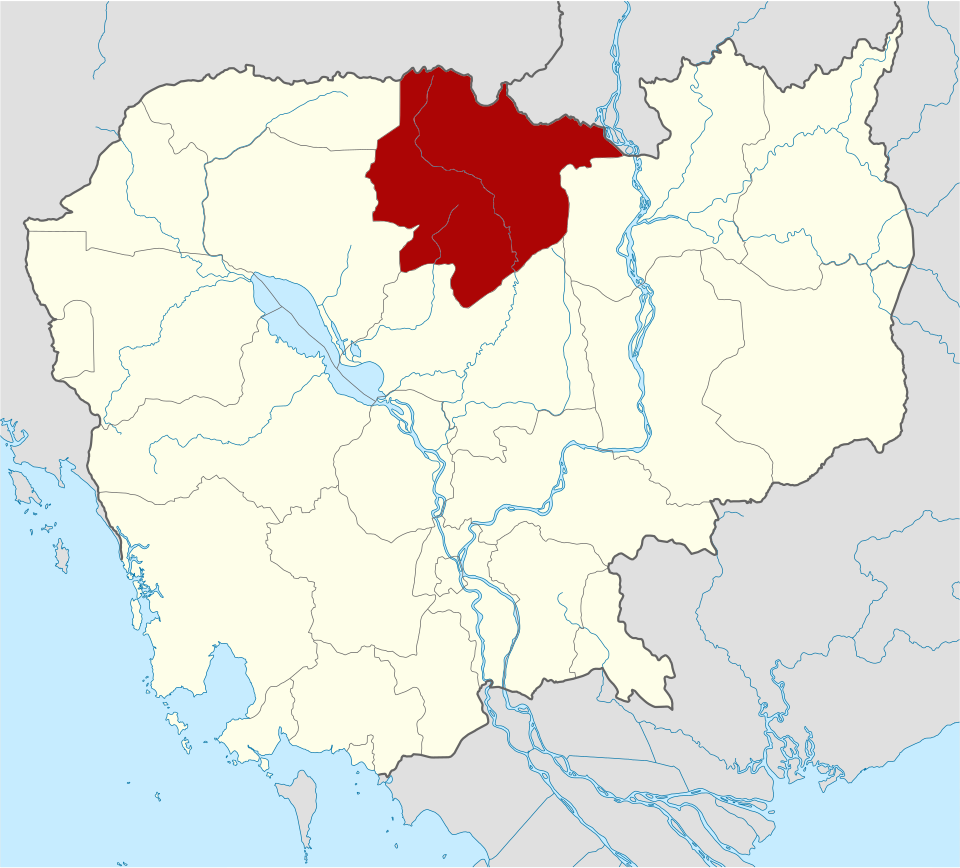
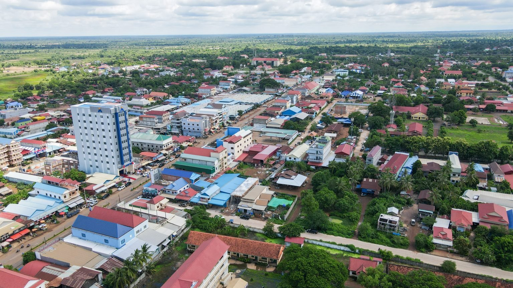
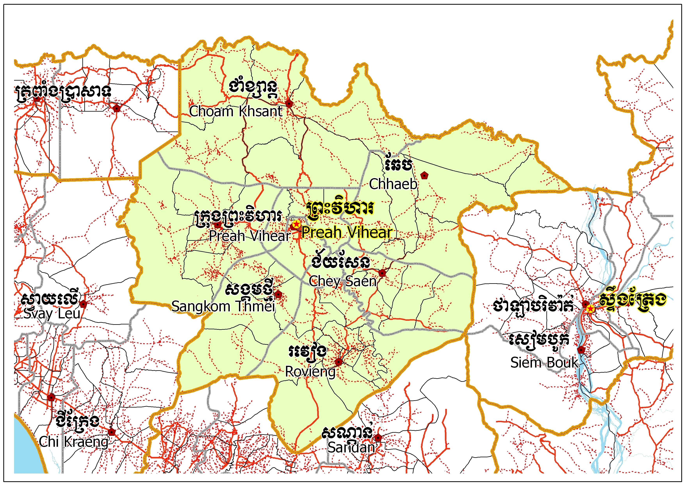
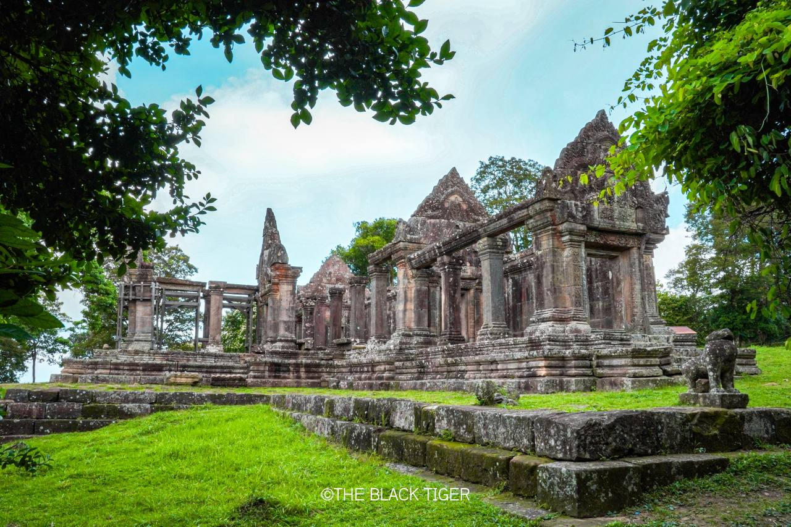
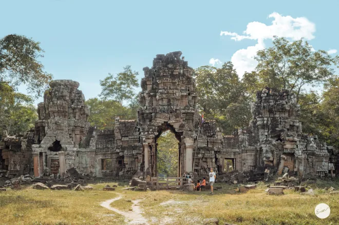

Preah Vihear
← ត្រឡប់ទៅផែនទីខេត្តព្រះវិហារ គឺជាខេត្តដែលស្ថិតនៅភាគខាងជើងបំផុតនៃប្រទេសកម្ពុជា ខេត្តនេះមានផ្ទៃដីធំជាងគេលំដាប់ទី២ និងមានប្រជាជនរស់នៅតិចនៅតំបន់ភ្នំ និងខ្ពង់រាប ដែលជាខេត្តមានលក្ខណៈវប្បធម៌ប្រវត្តិសាស្ត្រនិងធម្មជាតិ ។ នៅភាគខាងជើងនៃខេត្តជាប់នឹងប្រទេសថៃនិងឡាវ ដែលបង្កើតជាច្រកអន្តរជាតិសម្រាប់ពាណិជ្ជកម្មនិងទេសចរណ៍។ ខេត្តព្រះវិហារ គឺជាតំំបន់មួយនៅភាគខាងជើងនៃកម្ពុជាដែលអាចទាក់ទាញភ្ងៀរជាតិនិងអន្តរជាតិជាច្រើនសម្រាប់មកទស្សនាប្រាសាទបុរាណ និងទេសភាពព្រៃធម្មជាតិ រីឯទីរួមខេត្តព្រះវិហារគឺ ក្រុងព្រះវិហារ។ខេត្តព្រះវិហារ ត្រូវបានបង្កើតឡើងដោយក្រមលេខ១៩៤ ប រ នាថ្ងៃទី២២ ខែកក្កដា ឆ្នាំ១៩៦៤ គឺក្រោយពេលព្រះរាជាណាចក្រកម្ពុជាឈ្នះក្តីលើប្រទេសថៃតាមសាលក្រមចុះថ្ងៃទី១៥ ខែមិថុនា ឆ្នាំ១៩៦២ នៅតុលាការអន្តរជាតិនាទីក្រុងឡាអេ ប្រទេសហូឡង់ ដោយបានដាក់ឈ្មោះថា «ខេត្តព្រះវិហារ» ។ បើយោងតាមឯកសាររដ្ឋបាលខេត្តបានឱ្យដឹងថាខេត្តព្រះវិហារកាលនោះមានចំនួន៤ស្រុកដែលរួមមាន៖ស្រុករវៀង ស្រុកឆែប ស្រុកជាំក្សាន្ត និងស្រុកអង្គរធំ។

ខេត្តព្រះវិហារស្ថិតនៅក្នុងភូមិសាស្រ្តទិសឧត្តរនៃព្រះរាជាណាចក្រកម្ពុជា ដែលមានចម្ងាយពីរាជធានីភ្នំពេញ ប្រមាណចំងាយ ២៩៤គីឡូម៉ែត្រ ជាខេត្តស្ថិតនៅតំបន់ខ្ពង់រាប តំបន់ព្រៃភ្នំ ភូមិសាស្ត្រដែលមានភាពទូលាយ សំបូរព្រៃឈើធំៗជាជំរកសត្វព្រៃគ្រប់ប្រភេទ រ៉ែ ធនធានធម្មជាតិ និងសំនង់ប្រវត្តិសាស្ត្រ ប្រាសាទបុរាណ។ ព្រំប្រទល់ខាងជើងទល់នឹងប្រទេសថៃ និងប្រទេសឡាវ ប៉ែកខាងត្បូងទល់នឹងខេត្តកំពង់ធំ ប៉ែកខាងលិចទល់នឹង ខេត្តសៀមរាប និងឧត្តរមានជ័យ ប៉ែកខាងកើតទល់នឹង ខេត្តស្ទឹងត្រែង។ ខេត្តព្រះវិហារមានផ្ទៃដីសរុប ១៣.៧៨៨ គី ឡូម៉ែត្រការ៉េ ក្នុងនោះផ្ទៃដីបង្ករបង្កើនផលមានចំនួន ៣០.០០០ហិចតា និងមានចំនួន៨៥%ជាព្រៃឈើ។ ខេត្តចែកចេញជា ៧ស្រុកក្រុងរួមមាន ៤៧ឃុំដែលមានភូមិសរុប ២០៨ភូមិ និងសង្កាត់មាន២។ ប្រជាពលរដ្ឋនៅខេត្តព្រះវិហារភាគច្រើនជាជនជាតិខ្មែរនិងមានជនជា តិភាគតិច កួយ មានប្រមាណ២០% មានរបរធ្វើស្រែចម្ការ រកជ័រ រកវល្លិ៍ លក់ដូរ និងនេសាទត្រីបន្តិចបន្តួច។ ការងារធ្វើស្រែចំការពុំសូវទទួលបានទិន្នផល ខ្ពស់ឡើយ ព្រោះដោយបងប្អូនធ្វើតាមរបៀបអភិរក្សនិយម គឺធ្វើស្រែប្រវាស់មេឃ។


ខេត្តព្រះវិហារត្រូវចែកជា ៧ស្រុក និង ១ ក្រុង ក្នុងនោះមាន ៤៨ឃុំ និង ២ សង្កាត់។
ប្រាសាទព្រះវិហារមានទីតាំងនៅភូមិធម្មជាតិ ឃុំស្រអែម ស្រុកជាំក្សាន្ត នៅលើជួរភ្នំដងរែក ជាប់ព្រំប្រទល់អន្តជាតិកម្ពុជានិងប្រទេសថៃ។ ប្រាសាទព្រះវិហារមានចំងាយផ្លូវ ៤០០គមពីភ្នំពេញ តាមផ្លូវជាតិលេខ៦២ និង១៥០គមពីទីរួមខេត្តព្រះវិហារ។ ប្រាសាទព្រះវិហារត្រូវបានកសាងឡើងក្នុងសម័យអង្គរ ដោយព្រះមហាក្សត្រព្រះបាទសូរ្យវរ្ម័នទី១ នៅក្នុងសតវត្សរ៍ទី១១ និងត្រូវបានកសាងដោយព្រះមហាក្សត្រជាច្រើនអង្គរទៀត។ ប្រាសាទព្រះវិហារមានឈ្មោះតាមសិវលិង្គនៅក្នុងប្រាសាទដែលមានឈ្មោះថា ស្រី សិខារិស្វរៈ ដែលមានន័យថាអំណាចនៃកំពូលភ្នំ។ សិវលិង្គដែលតម្កល់នៅក្នុងប្រាសាទនេះត្រូវបាននាំយកមកពីប្រាសាទវត្តភូ(ប្រទេសឡាវ)ដើម្បីតម្កល់ទុកនៅក្នុងប្រាសាទនេះ។ ប្រាសាទព្រះវិហារមានគោបុរៈ(ខ្លោងទ្វារ)ចំនួន៥ ដែលរៀបចំពីគោបុរៈទី១នៅខាងលើរហូតដល់គោបុរៈទី៥ ប្រាសាទព្រះវិហារបែរមុខទៅទិសខាងជើង។ ភ្នំនេះមានកំពស់៧៤០ម ធៀបកំពស់ទឹកសមុទ្រ។ ដោយមានផ្ទៃក្រលា៨០០ម៤០០ម ចំនោតខ្លាំងពីទឹកដីកម្ពុជានិងរាងទេរទៅរកទឹកដីប្រទេសថៃ។ ប្រាសាទព្រះវិហារត្រូវបានដាក់បញ្ជូលក្នុងបញ្ជីជាសម្បត្តិបេតិកភណ្ឌពិភពលោកនៅថ្ងៃទី៧ខែកក្កដាឆ្នាំ២០០៨។


ប្រាសាទព្រះខ័នកំពង់ស្វាយ(អ្នកស្រុកហៅថា ប្រាសាទបាកាណ)ដែលមានទីតាំងស្ថិតនៅភូមិតាសែង ឃុំរណសិរ្ស ស្រុកសង្គមថ្មី នៅជិតព្រំប្រទល់ខេត្តកំពង់ធំនិងសៀមរាប ស្ថិតនៅភាគនិរតីចំងាយចំនួន១០៥គម ពីទីរួមខេត្ត។ ប្រាសាទបាកានមានក្បូរក្បាច់រចនាប្រហាក់ប្រហែលនឹងប្រាសាទអង្គរវត្តដែរតែកសាងមុនពេលលើករាជធានីទៅអង្គរវត្ត។ ប្រាសាទបាកានមានឈ្មោះដើមហៅថាជ័យស្រីប្រាសាទនេះកសាងដោយព្រះបាទសុរ្យវរ្ម័នទី១ (គស១០០២) លើបូជនីយដ្ឋានចាស់របស់ព្រះបាទយសោវរ្ម័នទី១និងមានបន្ថែមរចនាបថមុខ៤ខ្លះដោយព្រះបាទជ័យវរ្ម័នទី៧មុនពេលឡើងគ្រងរាជនៅអង្គរ (គស១១៨១)ដែលព្រះអង្គបានកសាងប្រាសាទនេះដើម្បីតំកល់អដ្ឋិធាតុញាតិវង្សនិងព្រះបរមគ្រូរបស់ព្រះអង្គ។ ប្រាសាទព្រះខ័នកំពង់ស្វាយស្ថិតនៅលើទីតាំងយុទ្ធសាស្រ្តទ័ពដែលមានលក្ខណពិសេសដូចជាមានទឺកព័ន្ធជុំវិញនិងស្ថិត ក្បែរប្រាសាទមានកន្លែងស្លដែកសម្រាប់ធ្វើជាអាវុធទៀតផង។ ប្រាសាទត្រូវបានកសាងដោយព្រះបាទជ័យវរ្ម័នទី៧ ដើម្បីបង្ហាញពីការឈ្នះចម្បាំងជាមួយប្រទេសចម្ប៉ាផងដែរ។
តំបន់រមណីយដ្ឋានប្រាសាទកោះកែរមានទីតាំងស្ថិតនៅភូមិស្រយ៉ង់ជើងឃុំស្រយ៉ង់ ស្រុកគូលែន ដែលស្ថិតនៅជិតព្រំប្រទល់ខេត្តសៀមរាប មានចម្ងាយ៧២គីឡូម៉ែត្រ ពីទីរួមខេត្តព្រះវិហារ។ ក្រុមប្រាសាទកោះកែរមានប្រាសាទព័ទ្ធជុំវិញចំនួន៣៨ប្រាសាទដែលមានចំងាយពីប្រាសាទមួយទៅប្រាសាទមួយពី២ទៅ៥គម។ ប្រាសាទកោះកែរត្រូវបានកសាងកសាងឡើងដោយព្រះបាទជ័យវរ្ម័នទី៤ នៅក្នុងឆ្នាំ៩២១ដល់ ៩៤២ ប្រាសាទនេះស្ថិតនៅ៨០គីឡូម៉ែត្រនៃទិសឥសានអង្គរធំ។ ប្រាសាទនេះមានលក្ខណៈជាប្រាសាទភ្នំមាន៧ថ្នាក់កំពស់៣៥ម។ តំបន់រមណីយដ្ឋានប្រាសាទកោះកែរ ដែលមានឈ្មោះដើមថាឆោគគីតាមរយៈសិលាចារឹកប្រាសាទដំរី។ រមណីយដ្ឋានប្រាសាទកោះកែរមានប្រាសាទជាច្រើននៅក្នុងនោះមានដូចជា ប្រាសាទធំ ប្រាសាទចិន ប្រាសាទដំរី ប្រាសាទលិង្គ ប្រាសាទច្រាប ប្រាសាទក្រចាប់។ល។ តំបន់រមណីយដ្ឋានប្រាសាទកោះកែរជារាជធានីរបស់ព្រះបាទជ័យវរ្ម័នទី៤ បន្ទាប់ពីព្រះអង្គបានផ្លាស់ប្តូររាជធានីពីយសោធរេបុរៈរបស់ព្រះបាទយសោវរ្ម័នទី១។ ភាគច្រើនប្រាសាទនៅក្នុងតំបន់កោះកែរសាងសង់អំពីថ្មភក់។